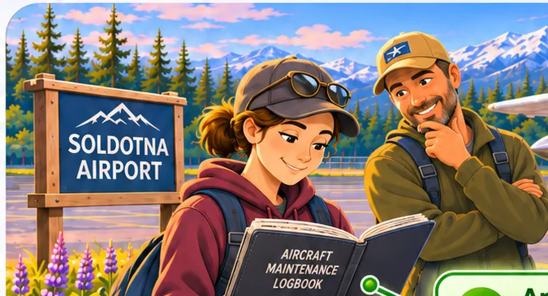
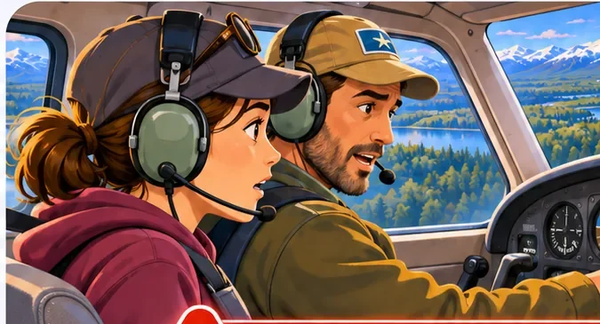

SUBPART A · GENERALA Soldotna Training Flight
Authority, airworthiness, operating limitations, emergencies, and reporting—in one connected flight story.
Start Subpart A →THE LEARNING LIBRARY
Follow Maya and Alex through short, illustrated learning experiences based on 14 CFR Part 91. Explore a concept, discover its connections, and apply what you've learned.
14 CFR PART 91
Each Subpart is a separate learning environment. Continue exploring at your own pace.

SUBPART A · GENERALAuthority, airworthiness, operating limitations, emergencies, and reporting—in one connected flight story.
Start Subpart A →
SUBPART B · FLIGHT RULESTwo connected flight paths: VFR flight decisions around Soldotna and a separate IFR training journey.
Choose VFR or IFR →See the illustration, inspect the situation, adjust what matters, and reveal the regulation. This is an early learning prototype. Aviation decisions must always use current, applicable regulations and approved aircraft guidance.